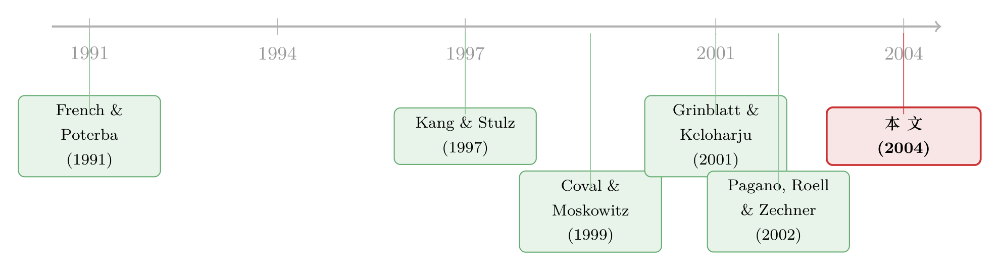

把股票挂到哪国去？——一道写满「亲近偏好」的财务决策
本文读的是 Sarkissian & Schill (2004, Review of Financial Studies)：用一份近乎「全宇宙」的 1998 年海外上市样本，他们发现企业把股票挂到国外去时，挑的并不是能让外国投资者「最分散风险」的市场，而是离自己又近又熟的市场。结论很反直觉——海外上市非但没有跨越「本土偏好（home bias）」这道坎，反而把它原原本本地复制了一遍。
1 一个被问反了的问题
先讲一个常识。
如果世界资本市场是完全整合（fully integrated）的——没有交易成本、没有信息壁垒、没有心理上的偏爱——那么一家公司把股票挂在伦敦、纽约还是东京，本质上没有区别。投资者会无差别地持有全世界的证券以最大化分散化收益，公司的投资者池子也不会因为「在哪儿上市」而改变。换句话说，在一个无摩擦的世界里，海外上市的地点选择是一个无关紧要（irrelevant）的决策。
可现实显然不是这样。French and Poterba (1991)、Tesar and Werner (1995) 早就发现，投资者的持仓系统性地偏向本国资产——这就是著名的「本土偏好」之谜。后来的一长串文献进一步把这种偏好拆开：Coval and Moskowitz (1999) 说投资者偏爱地理上离自己近的公司，Grinblatt and Keloharju (2001) 说投资者偏爱和自己说同一种语言、同一种文化的公司，Kang and Stulz (1997) 说外国投资者更愿意持有那些生产「可贸易品」的大公司。一句话：投资者会因为「熟悉（familiarity）」而放弃教科书里那套分散化原则。
到这里，文献都在讲「投资者」。Sarkissian 和 Schill 问了一个被绝大多数人问反了的问题：
如果「亲近」对投资者这么重要，那它对融资的一方——也就是发行股票的公司——是不是也同样重要？
这就是全文的核心张力所在。它把本土偏好文献的镜头，从「投资决策」掉转到了「融资决策」。
2 两个针锋相对的假说
接着，一个自然的问题是：公司面对外国投资者的「熟悉度壁垒」，会怎么反应？作者给出了两种可能，而且这两种可能恰好导向完全相反的预测。
第一种反应，是把海外上市当成一辆「破壁车」。Merton (1987) 的经典模型说，一家公司的投资者基础（investor base）越大，它需要为特质风险支付的溢价就越低，资本成本也就越低。如果海外上市真能把一家原本默默无闻的公司「介绍」给外国投资者——Baker, Nofsinger, and Weaver (2002)、Lang, Lins, and Miller (2003)、Ahearne, Griever, and Warnock (2004) 都发现外国公司在美国上市后，确实获得了更多的媒体和分析师关注——那么公司就应该主动往那些「壁垒最高、分散化收益最大」的陌生市场去挂牌。这导出了：
假说一（本土偏好的「解药」假说，home bias solution）：海外上市能跨越投资者的亲近偏好。公司会去那些分散化收益大、熟悉度壁垒高的市场上市。
第二种反应，则承认上市的成功本身就被现有的熟悉度壁垒框死了。Kang and Stulz (1997) 发现，赴美上市的日本公司，其外国持股比例几乎没有变化——上市这件事并没有真的扩大投资者基础，只是给那些本来就持有它、本来就熟悉它的外国投资者降低了一点交易成本而已。如果是这样，那么公司经理人心里其实门儿清：外国投资者根本不愿意碰一只他们不熟的股票，与其费力去陌生市场敲钟，不如顺着现有那拨熟悉自己的投资者，挂到他们脚下。这导出了针锋相对的：
假说二（本土偏好的「镜像」假说，home bias reflection）：海外上市被投资者的亲近偏好牢牢约束。公司会去那些分散化收益小、熟悉度壁垒低的市场上市。
两个假说的检验思路非常干净：去看公司实际挑选的海外上市地，到底是「分散化收益最高的陌生市场」，还是「最近、最熟的市场」。
3 识别策略：把「全宇宙」铺开来数
但真正关键的一步，在于数据。
要回答上面的问题，你需要的不是某一国公司赴美上市的小样本，而是全世界公司挂到全世界各地的完整版图。作者为此手工构建了一个数据集：调查了 44 个主要的世界股票交易所，剔除了金融数据不可靠的国家、纯粹充当避税港的市场（如开曼、百慕大、泽西、荷属安的列斯），再剔除所有已退市的、以及投资基金/信托类的挂牌，最后得到一份 1998 年的快照——2,251 笔海外上市，来自 44 个母国，落在 25 个东道市场上。
作者用国际证券交易所联会（FIBV）的汇总数字做了交叉验证：FIBV 报告的海外挂牌总数比本样本多 27%，而这 27% 的差额，几乎全都对得上那些被剔除的投资基金/信托与非交易挂牌。换句话说，这份样本已经非常接近全球海外上市的「全宇宙」了。
数据本身就讲了几个故事。东道市场里，美国（NYSE/Nasdaq）和英国（伦敦）是绝对的两强，分别托管了 659 和 406 家外国公司。若论「相对吸引力」——把托管的外国公司数除以本地公司数（即表中的 F/D 比率）——卢森堡以 2.8 遥遥领先：每一家本地公司，对应着三家以上的外国挂牌。从时间上看，全部挂牌里有 1,146 笔（51%）发生在 1990 年代，跨境上市是一个相当晚近、相当集中的现象。
识别的核心，是构造各种「亲近度」变量，看它们能不能解释上市地的分布：
- 地理亲近 (geographic proximity)：两国首都之间的大圆距离
DISTANCE（单位为兆米，即 1,000 公里）。 - 经济亲近 (economic proximity)：两国之间的贸易往来强度。
- 文化亲近 (cultural proximity)：是否共享语言、是否有殖民等历史纽带。
- 产业亲近 (industrial proximity)：母国与东道国产业结构的相似度。
然后，在控制住一系列「常规」的上市动因（分散化收益、流动性、披露成本、税收优惠、投资者保护）之后，看亲近度变量是否还显著地把公司「拉」向了某些市场。
4 主要结果：偏好近，而不是偏好「能分散」
先看一个最直观的热身证据。作者借用 Ahearne, Griever, and Warnock (2004) 算出的美国投资者持仓偏差 BIAS（实际持仓权重相对全球市值权重的偏离），对 43 个国家做了一个简单回归：
$$ \text{BIAS}_j = 0.6738 + 0.0113\,\text{DISTANCE}_j + e_j $$
括号里的 t 值分别是 15.78 和 2.47。斜率 0.0113 显著为正，意味着：一国离纽约每远 1,000 公里，美国投资者对它的低配偏差就扩大 1% 以上。投资者的持仓，确实随地理距离单调地「冷淡」下去。这印证了 Coval and Moskowitz (1999)、Huberman (2001) 在国内市场上看到的那种「灯下黑」。
那么公司的上市选择呢？这才是全文的落点。结果是：
第一，上市活动在地理上高度「抱团」。海外上市的频率分布，比一个按市值加权（value-weighted）的基准分布要「近」上 38%。也就是说，公司系统性地把股票挂到了离自己更近的地方，而不是按各市场的体量去分配。
第二，亲近度全面占优。在控制了其他解释之后，地理、经济、文化、产业这几种「两国之间有多近」的变量，主导了非 G5 国家公司对东道市场的选择。注意这个重要的异质性：对 G5 国家（美、日、德、英、法）的公司，没有发现亲近偏好的证据——大概因为这些大国的知名公司，本来就足够「全球熟悉」，不再受壁垒约束。这一点和 Kang and Stulz (1997)、Dahlquist and Robertsson (2001) 的发现一脉相承：偏好对大公司、对生产可贸易品的公司更弱。
第三，也是最反直觉的一击——分散化动机几乎得不到支持。如果公司真想替外国投资者「买分散化」，它就该去那些与本国市场相关性最低、贝塔风险最低的市场上市。可数据给出的恰恰相反：跨境上市更常发生在那些与母国市场收益相关性高、贝塔风险高的市场之间。这等于直接否决了假说一。
于是反转出现了：海外上市非但没有跨越本土偏好，反而是它的一面镜子。假说二胜出。公司不是去「开拓」陌生的投资者，而是去「投奔」那些早已熟悉自己的投资者脚下的市场。
这个结论的分量在于，它推翻了一个流行的叙事——人们一直以为海外上市能把外国股票「搬到」投资者家门口，从而缓解跨境投资的摩擦（这正是 Ahearne, Griever, and Warnock (2004) 的乐观看法）。Sarkissian 和 Schill 说：不，本土偏好不仅仅是一道「跨境交易成本」的难题，它还和「熟悉度」深深纠缠在一起，而后者，是上市这辆车撞不破的墙。
值得一提的是，「亲近」固然是主导，却不是唯一。作者也发现公司倾向于挂到那些规模更大、资本化程度更高、税收环境更宽松的市场——这些常规动因依然在起作用，只是没能盖过亲近偏好。
5 文献脉络
把这篇论文放回它生长的那条藤蔓上，故事会更清楚。
最早的火种，是 French and Poterba (1991) 和 Tesar and Werner (1995) 点燃的「本土偏好」之谜——投资者死活不肯按全球市值去分散。接着，文献分成了两条解释路径：一条把它归咎于跨境交易成本与壁垒（Stulz (1981)、Adler and Dumas (1983)）；另一条则归咎于信息不对称与心理因素（Gehrig (1993)、Brennan and Cao (1997)）。

真正把「亲近」量化坐实的，是世纪之交的一批实证：Kang and Stulz (1997) 在日本数据里看到外国投资者偏爱大的、可贸易品的公司；Coval and Moskowitz (1999) 在美国基金经理身上看到「偏爱地理近邻」；Grinblatt and Keloharju (2001) 在芬兰数据里把语言与文化的偏好分离了出来。这些都讲的是「投资者」。
与此同时，跨境上市文献几乎都在问另一个问题——「上市值不值（要不要 cross-list）」：Foerster and Karolyi (1999) 量它对资本成本的影响，Doidge, Karolyi, and Stulz (2004)、Reese and Weisbach (2002) 量它对治理与投资者保护的作用（关于「租一部更严的法律来约束老板」这条线，可参见《租来的法律：把股票挂到纽约，真能管住自家的老板吗？》与《把股票挂到纽约，老板就少偷一点——一个关于「绑定」的估值故事》）。和本文最近的「邻居」是 Pagano, Roell, and Zechner (2002)，他们研究了欧洲公司为什么去海外上市的趋势。
Sarkissian 和 Schill (2004) 的位置很独特：他们不问「上不上」，而问「上到哪儿」；并且第一次把投资者本土偏好文献里的「亲近」框架，整套搬到了公司的上市地选择上。这是一次漂亮的「视角平移」。（关于挂牌之后交易会不会真的跟过去，可另见《把股票挂到美国去，交易真的会跟过去吗？》。）
6 评论与延伸（Q&A + 研究方向）
(a) 几个可能的疑问
Q：「亲近偏好」和「分散化动机」难道不会同时成立吗？为什么要二选一？
不是逻辑上互斥，而是它们对「上市地」的预测正好相反。分散化动机预言公司去低相关、低贝塔的陌生市场；亲近偏好预言公司去高相关、近距离的熟悉市场。数据落在后者那一边，所以说分散化动机「得不到支持」，而不是说它在理论上不存在。
Q：1998 年的一张「快照」，会不会把因果讲反——是先有贸易/文化往来，才有上市，还是反过来？
这是本文识别上最大的软肋。亲近度变量（贸易、文化、地理）大多是慢变量，外生性较强，地理距离更是几乎完全外生；但「经济亲近」与上市之间可能存在反向因果或共同驱动。作者主要靠横截面相关 + 控制变量来论证，并没有一个干净的外生冲击，所以严格说这是相关性证据，而非因果。
Q：为什么 G5 公司没有亲近偏好，这是 bug 还是 feature？
是 feature，而且是支持性证据。理论说亲近偏好源于「不熟悉」；G5 的大公司本就家喻户晓，壁垒接近于零，于是偏好消失——这正好和机制吻合，也与 Kang and Stulz (1997)「偏好对大公司更弱」相呼应。
Q：作者能区分「信息不对称」和「纯心理偏爱」这两种familiarity吗？
不能，作者自己也坦承这一点。地理、文化、产业这些变量，既可能代理外国投资者的信息劣势，也可能代理他们对这些股票的心理容忍度。本文只在「broad sense」上使用 familiarity，不试图区分底层机制。这是诚实，但也是局限。
Q：会不会是供给侧——某些交易所的上市门槛/规则把公司「筛」到了近处，而非公司主动偏好近处？
这是个真问题。作者确实控制了市场规模、资本化、税收、披露标准等供给侧特征，但「监管准入的隐性摩擦」很难完全观测。如果某些近邻市场恰好门槛低，那观察到的「亲近」就部分是被动结果而非主动偏好。
Q：这和「上市能降低资本成本」的大量证据矛盾吗？
不直接矛盾。资本成本能降，未必是因为「触达了陌生的新投资者」，也可能是给既有的、熟悉的外国投资者降低了交易/持有成本（Kang and Stulz 1997 的解读）。本文恰恰提示：降成本的渠道，也许是「镜像」而非「破壁」。
(b) 几个可能的研究问题与提案
1. 把「亲近偏好」搬到公司债的跨境发行上。 - 【经济故事】股票挂牌偏好近邻，那么企业到境外发债（欧洲债、扬基债、熊猫债）时，币种与发行地的选择是否同样被地理/文化/贸易亲近主导？信用市场里，信息不对称的代价更直接体现在利差上，机制可能更锋利。 - 【可行性】高。Dealogic/Refinitiv 的全球债券发行数据库可给出发行人国别、发行地、币种；CEPII 提供双边距离、语言、殖民史等亲近度变量。识别仍是横截面相关为主，但可用引力模型（gravity model）框架，doable。
2. 外资持有人的「亲近」与公司债二级市场流动性。 - 【经济故事】若一只债券的境外持有人主要来自「近邻」国家，它在压力期的流动性是否更稳（熟悉→不恐慌抛售），还是更脆（同质持有人→同向行动）？这把本土偏好和流动性危机连了起来。 - 【可行性】中。需要 TRACE 成交数据 + 持有人国别（如 eMAXX、各国托管申报），后者覆盖不全是主要障碍；可在 COVID 等冲击窗口做事件研究。（相关脉络见《差点死掉的那个市场：一场公司债流动性危机的微观解剖》。）
3. 「亲近偏好」会随信息技术下降而衰减吗？ - 【经济故事】Peterson and Rajan (2002) 在小企业贷款里发现「距离的重要性在下降」。从 1998 到今天，互联网、XBRL、全球分析师覆盖把信息壁垒大幅拉低，海外上市的地理抱团是否随之松动？这是一个对本文的动态再检验。 - 【可行性】高。把样本从 1998 拓展到多年面板（FIBV/WFE、各交易所年报），用「亲近度系数随年份的变化」作为被解释对象，可做。识别清晰，结论有政策含义。
4. G5 与非 G5 的分野，能否用「全球知名度」连续变量替代？ - 【经济故事】本文用 G5/非 G5 二分法捕捉「壁垒高低」。若改用公司层面的连续代理（媒体提及量、分析师覆盖数、可贸易品占比），能否更精细地刻画「熟悉度越高、亲近偏好越弱」这条单调关系？ - 【可行性】中。需要公司层面的媒体/分析师数据（Factiva、I/B/E/S）匹配到 1998 前后的上市样本，匹配工作量大，但能把机制从国别推进到公司，价值高。
5. 反向问题：东道市场如何「招商」？ - 【经济故事】既然公司偏爱近邻，那些想吸引外国上市的小市场（如卢森堡 F/D=2.8）是靠什么突破地理劣势的——税收、披露宽松、还是面向特定文化圈的定向制度设计？这把视角从「发行人偏好」转向「市场竞争策略」。 - 【可行性】中。需要细致的交易所制度变量（上市规则、税制变迁）做面板，制度数据收集是瓶颈，但可作为案例+面板的混合研究。
7 我的判断
这篇论文最大的贡献，是一次干净利落的视角平移：它把本土偏好这套原本只讲投资者的语言，第一次系统地用到了公司的上市地选择上，并且靠一份近乎「全宇宙」的手工样本，给出了一个反直觉却扎实的结论——海外上市是本土偏好的镜像，不是它的解药。这个结论对「跨境上市能整合市场」的乐观叙事是一记有力的修正。
但识别上的担忧也很实在。全文几乎是建立在 1998 年单一横截面上的相关性证据：亲近度变量虽多为外生的慢变量（地理距离尤其干净），可「经济亲近」与上市之间的反向因果、以及交易所准入这类供给侧的隐性摩擦，都没有被一个外生冲击彻底切开。作者也很坦诚地承认，他们无法区分这种亲近究竟来自「信息劣势」还是「心理偏爱」——而这恰恰是 familiarity 文献最想钉死的那颗钉子。
我接下来最想看到的，是两件事：其一，把这张快照拉成长面板，看亲近偏好的系数是否随信息技术进步而单调衰减——如果衰减，本文就成了一个时代的注脚；如果不衰减，那「亲近」就远不止是信息成本，而是更顽固的心理结构。其二，把同一套框架搬到公司债的跨境发行与外资持有人结构上去，那里利差是连续的、信息不对称的代价更直接，也许能把「镜像 vs 破壁」这场争论，量得比股票市场更清楚。
参考文献
- Adler, M., and B. Dumas (1983). International Portfolio Choice and Corporation Finance: A Synthesis. Journal of Finance 38, 925–984.
- Ahearne, A. G., W. L. Griever, and F. E. Warnock (2004). Information Costs and Home Bias: An Analysis of U.S. Holdings of Foreign Equities. Journal of International Economics 62, 313–336.
- Baker, H. K., J. R. Nofsinger, and D. G. Weaver (2002). International Cross Listing and Visibility. Journal of Financial and Quantitative Analysis 37, 495–521.
- Brennan, M., and H. Cao (1997). International Portfolio Investment Flows. Journal of Finance 52, 1851–1880.
- Coval, J., and T. Moskowitz (1999). Home Bias at Home: Local Equity Preference in Domestic Portfolios. Journal of Finance 54, 2045–2073.
- Dahlquist, M., and G. Robertsson (2001). Direct Foreign Ownership, Institutional Investors, and Firm Characteristics. Journal of Financial Economics 59, 413–440.
- Doidge, C., G. A. Karolyi, and R. Stulz (2004). Why Are Foreign Firms Listed in the U.S. Worth More? Journal of Financial Economics 71, 205–238.
- Foerster, S., and A. Karolyi (1999). The Effects of Market Segmentation and Investor Recognition on Asset Prices: Evidence from Foreign Stocks Listing in the United States. Journal of Finance 54, 981–1013.
- French, K., and J. Poterba (1991). Investor Diversification and International Equity Markets. American Economic Review 81, 222–226.
- Gehrig, T. (1993). An Information Based Explanation of the Domestic Bias in International Equity Investment. Scandinavian Journal of Economics 95, 97–109.
- Grinblatt, M., and M. Keloharju (2001). Distance, Language, and Culture Bias: The Role of Investor Sophistication. Journal of Finance 56, 1053–1073.
- Huberman, G. (2001). Familiarity Breeds Investment. Review of Financial Studies 14, 659–680.
- Kang, J. K., and R. Stulz (1997). Why Is There a Home Bias? An Analysis of Foreign Portfolio Equity Ownership in Japan. Journal of Financial Economics 46, 3–28.
- Merton, R. (1987). Presidential Address: A Simple Model of Capital Market Equilibrium with Incomplete Information. Journal of Finance 42, 483–510.
- Pagano, M., A. A. Roell, and J. Zechner (2002). The Geography of Equity Listing: Why Do European Companies List Abroad? Journal of Finance 57, 2651–2694.
- Peterson, M., and R. Rajan (2002). Does Distance Still Matter? The Information Revolution in Small Business Lending. Journal of Finance 57, 2533–2570.
- Reese, W., and M. Weisbach (2002). Protection of Minority Shareholder Interests, Cross-Listings in the United States, and Subsequent Equity Offerings. Journal of Financial Economics 66, 65–104.
- Sarkissian, S., and M. Schill (2004). The Overseas Listing Decision: New Evidence of Proximity Preference. Review of Financial Studies 17, 769–809.
- Stulz, R. (1981). On the Effects of Barriers to International Asset Pricing. Journal of Finance 25, 783–794.
- Tesar, L., and I. Werner (1995). Home Bias and High Turnover. Journal of International Money and Finance 14, 467–492.